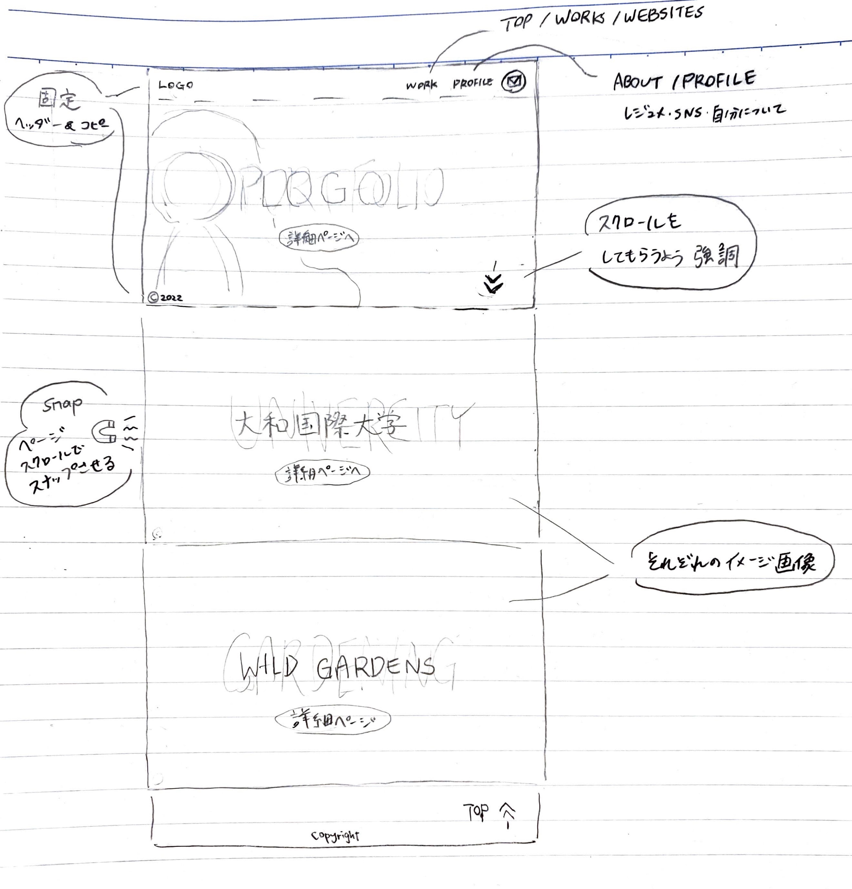
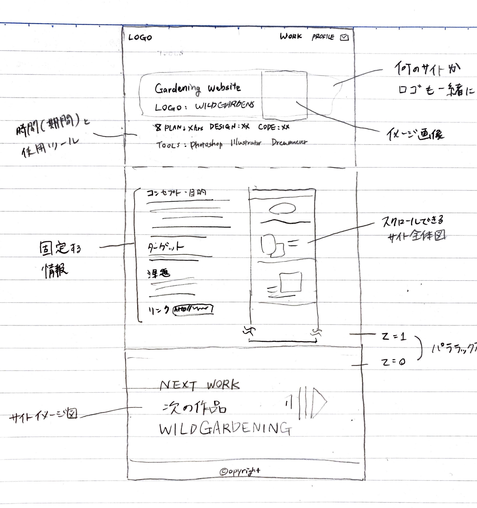
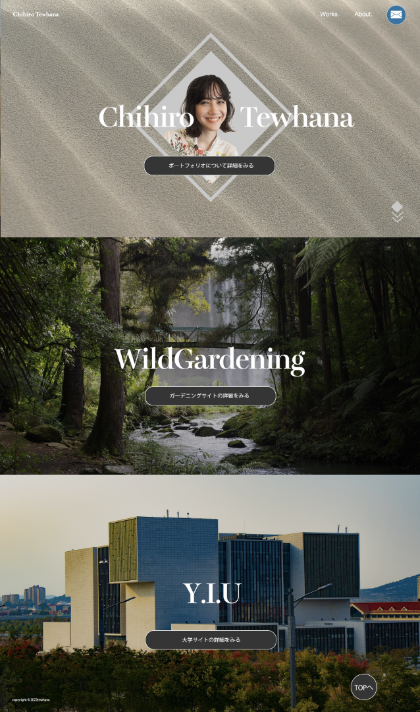
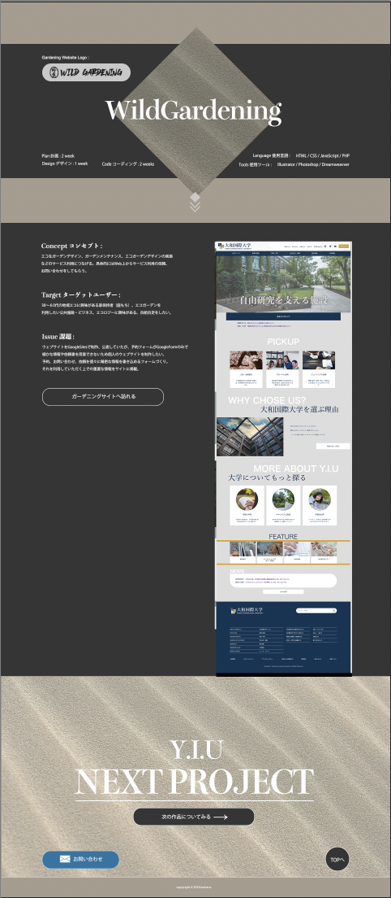

ChihiroTewhana
サイト制作の大まかな流れ
① Plan 企画
② Design デザイン
③ Code コーディング
主な使用言語やツール
HTML/CSS/JavaScript/PHP
Illustrator/Photoshop/Dreamweaver
VisualStudioCode/Wordpress
制作の企画 :
お客様とのヒアリングを行い、サイトのコンセプト（どのようなテーマにするか）や、ターゲットユーザー（年代や性別、細かな特徴を含めた誰に向けたサイトにしたいか）、そして解決すべき課題と目的を明確にします。
デザインの決定 :
スタイルガイド（上の画像参考）でどのような色合い・フォント・デザイン等を使うか、お客様と確認します。その後ワイヤーフレーム（ウェブサイトの大まかな骨組み）とデザインカンプ（サイト全体のデザインが分かるもの）を制作します。
動きを考慮した企画とコーディング :
デザインカンプを元にホバーアニメーションや動き、モーションを決めた上でコーディングします。
テスト :
サイトを運営した後、Googleのツールを元にウェブサイトのアクセス数・コンバージョン数・ヒートマップを記録します。ユーザーのサイトでの動きを確認し、ウェブサイトの改善またはマーケティングに活かします。


↑wireframe ↓design

